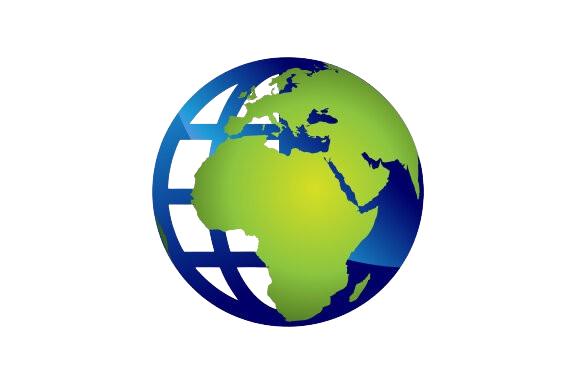

|  | World Affairs: Current Affairs & Perspectives |
Today's world is full of changes and challenges.The Ukraine-Russia war,the Israel-Palestine conflict, and the troubles in Syria with Assad's regime
show how complex our global issues are.
Along with these, new technology like artifical intelligence and health problems like pandemics are
shaping our world. Let's explore these important topics to understand what's happening in world affairs today.
Artificial Intelligence (AI) is changing our lives in many ways,making things easier and faster.It helps in areas like healthcare, finance and transportation
by processing data quickly and giving us useful information.But with these benefits come some important concerns. People worry about privacy, security
and the possiblility of losing jobs to machines.It's also important to make sure AI is fair and transparent, so everyone can benefit from it.As AI grows
we need to find a balance between using its advantages and addressing these ethical issues.

Geopolitical issues are conflicts between countries over things like land, resources, or power.The Ukraine-Russia war, the Israel-Palestine conflict, and the crisis
in Syria with Assad's regime are key examples of such issues affecting global peace and stability.
The Russia-Ukraine conflict, now in its third year, has seen intense fighting and significant destruction.Recently, Russia has intensified its attacks
including drone strikes on Ukrainian cities. Ukraine has responded with its own strikes on Russian territory. The conflict has caused thousands of
casualties and displaced millions of people, with both sides experiencing heavy losses. There are ongoing discussions about a potential ceasefire
but the situation remains volatile. Additionally, recent reports indicate that North Korean troops have been deployed to support Russia, adding
another layer of complexity to the conflict.
The Israel-Palestine conflict remains one of the most enduring and complex geopolitical issues. Recently, the situation has escalated with intense
fighting in Gaza. Israeli forces have conducted airstrikes, resulting in significant casualties and destruction . Hamas has responded with rocket attacks
leading to further violence and instability. Efforts for a ceasefire are ongoing, but the conflict continues to cause immense suffering for both
Israelis and Palestinians. The international community is closely watching, hoping for a resolution that can bring lasting peace to the region.
The conflict in Syria, under Bashar al-Assad's regime, has been devastating. Since 2011, the civil war has caused massive destruction, killed
hundreds of thousands, and displaced millions. Assad's forces, with support from Russia and Iran, have been accused of severe human rights abuses
including torture and chemical attacks. Recently, Assad fled to Russia as opposition forces took control of Damascus, marking a significant turn in the conflict.
In the past year, health problems have been influenced a lot by climate change. Heatwaves and natural disasters have hurt people’s health, causing many to move
and face food shortages. The COVID-19 pandemic is still a big issue, with new variants and lasting effects like "long COVID." Mental health problems have increased
because of the pandemic, conflicts, and money problems. Diseases like malaria and hepatitis C are still big worries, even though there have been some successes in
fighting them.
 View to see detail Analysis
View to see detail Analysis